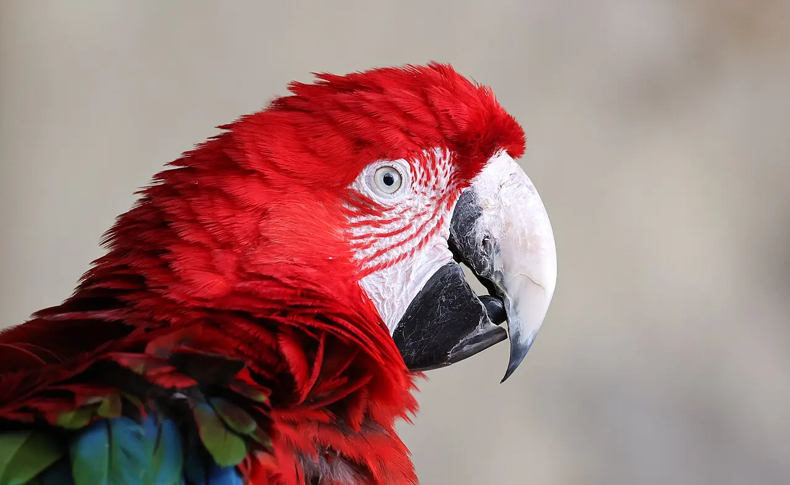

Módulo 4 Aula 16
Anatomia do bico
O bico é a “mão”, a “boca” e a “ferramenta” da ave. Por dentro, ele é uma estrutura leve, feita de camadas.
- De que camadas o bico é feito
- Por que o bico do tucano é leve
- O bico do papagaio e sua maxila que se mexe

Ave da aula
Tucano-toco Ramphastos toco
Camadas do bico
Como vimos na aula 1, o bico é feito de osso coberto por queratina, e as aves atuais não têm dentes[3]. A capa de queratina se chama [1]. Por baixo dela ficam os ossos da maxila (parte de cima) e da mandíbula (parte de baixo). As narinas costumam ficar na base do bico, na parte de cima[2]. Em bicos bem estudados, a estrutura parece um sanduíche: por fora, uma capa de queratina, e por dentro, um núcleo de osso com vazios, parecido com uma esponja[4].
Escolha uma camada.
Corte esquemático do bico de uma ave, sem escala.
Desenho simplificado, inspirado na estrutura descrita para bicos de tucano[4]. Nos outros grupos de aves, as proporções e a espessura das camadas variam.
O bico do tucano
O tucano-toco parece carregar um bico pesado demais. Não é: por dentro, ele é um osso esponjoso coberto por uma casca fina de queratina, o que o torna leve e resistente[4, 5]. Os tucanos comem principalmente frutos, mas também insetos e pequenos animais[7].
O bico ainda tem outro uso: é um radiador. Em um estudo de 2009 com tucanos-toco, os pesquisadores mostraram que a ave altera o fluxo de sangue no bico conforme a temperatura do ambiente, usando-o para perder calor[6]. É como as orelhas de um elefante.
O bico do papagaio
Papagaios e araras têm um bico curto, forte e curvo. A maxila é muito móvel: ela se prende ao crânio por uma dobradiça e pode se mexer de forma independente[8]. Isso permite quebrar sementes duras, manipular objetos e até usar o bico como um “terceiro pé” ao trepar[8]. Por dentro, a parte de cima do bico tem ranhuras ásperas, que ajudam a segurar a semente enquanto o bico cortante de baixo tira a casca[8].

Papagaio-verdadeiro
Amazona aestiva
Repare no bico curto e curvo, com a ponta em gancho. É esse gancho que segura a semente e faz força para quebrá-la.

Arara-vermelha-grande
Ara chloropterus
Nas araras, o bico é ainda maior e mais forte, com a parte de cima bem curvada sobre a de baixo.
Palavras novas
Teste rápido
Sem nota. Se errar, tente de novo.
De que é feita a camada externa do bico?
Por que o bico do tucano é leve, apesar de grande?
O que o tucano faz com o bico, além de comer?
Referências e leitura complementar
Onde conferir o que foi dito nesta aula. Os números entre colchetes no texto levam a estas fontes. Os links abrem em outra aba.
- RhamphothecaEncyclopaedia Britannica · inglêsA capa de queratina que reveste o bico.
- BeakEncyclopaedia Britannica · inglêsAnatomia e funções do bico, e como o formato se liga à alimentação.
- Morphology of the AvesUCMP · Universidade da Califórnia, Berkeley · inglêsBico sem dentes, ossos ocos ligados aos sacos aéreos, quilha do esterno e fúrcula.
- The toucan beak: Structure and mechanical responseMaterials Science and Engineering C (Seki et al.) · inglêsEstudo da estrutura do bico do tucano: casca de queratina e núcleo de osso esponjoso.
- Toucan and hornbill beaks: a comparative studyPubMed (artigo científico) · inglês · leitura complementarComparação do bico de tucanos e calaus.
- Heat Exchange from the Toucan Bill Reveals a Controllable Vascular Thermal RadiatorScience (2009) · inglês · leitura complementarEstudo que mostrou o bico do tucano-toco funcionando como radiador de calor.
- ToucanEncyclopaedia Britannica · inglês · leitura complementarBiologia dos tucanos.
- Psittaciform: Bill and skullEncyclopaedia Britannica · inglêsO bico dos papagaios: maxila móvel presa ao crânio por uma dobradiça, fileiras ásperas na parte de dentro do bico.
Os endereços foram abertos e conferidos em 29/09/2026. Alguns sites de revistas científicas e de órgãos oficiais exigem verificação humana e não puderam ser testados por robô. Sites externos podem mudar ou sair do ar.
Para levar
Em três frases
- O bico tem um núcleo de osso coberto por uma capa de queratina, a ramfoteca.
- No tucano, o núcleo é um osso esponjoso que deixa o bico leve, e o bico funciona também como radiador de calor.
- No papagaio, a maxila se prende ao crânio por uma dobradiça, o que dá um bico muito móvel.